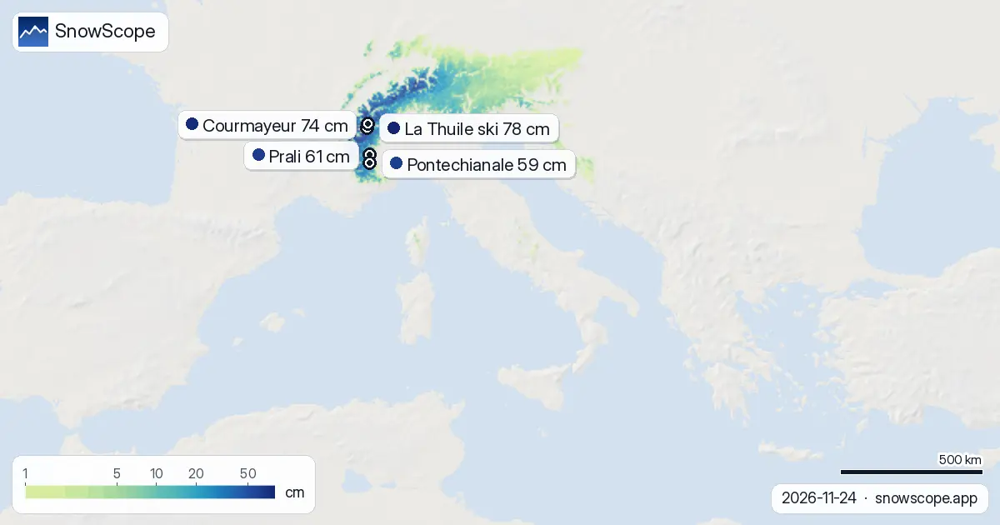
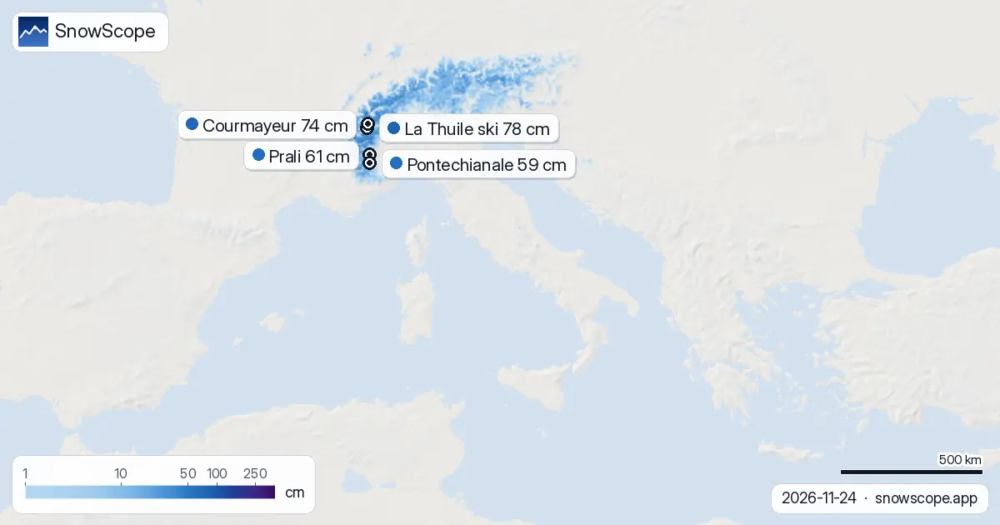

La copertura nevosa dell'Italia è aumentata di 11.110 km² in sette giorni
L'area innevata dell'Italia è cresciuta di più della metà in appena una settimana, salendo da 19.290 km² a 30.400 km². La Valle d'Aosta ha guidato questo rapido avanzamento, con 176 cm di neve fresca negli ultimi tre giorni.
Le previsioni neve in tempo reale per La Thuile ski nell'app SnowScopeAltezza neve, allerte powder e mappa 3D, gratis.Come si è svolto il periodo
Una settimana fa, il 17 novembre, la neve si trovava su soli 19.290 km² dell'Italia. Oggi copre 30.400 km². Questo salto di 11.110 km² è accaduto perché una serie di perturbazioni si è spostata attraverso le Alpi, portando precipitazioni nevose sostenute sull'alta quota. La crescita non è stata uniforme: alcuni giorni hanno visto la copertura nevosa ridursi (il sistema si è spostato o ha subito fusione alle quote inferiori), ma il trend generale è stato sempre al rialzo.
La Valle d'Aosta, nel nord-ovest, ha subito il peso del meteo. Ha ricevuto 176 cm di neve nelle ultime 72 ore—quasi il doppio dello spessore che giace sulla maggior parte delle stazioni sciistiche italiane. Le Alpi del Piemonte, a est, hanno ricevuto 55 cm nella stessa finestra temporale. Persino gli Appennini centrali, dove la neve è sottile, hanno accumulato 10 cm. Questo è il lavoro di un autentico meteo alpino, non di precipitazioni sparse.
| Day | White area | Most new snow in 3 days | Deepest resort |
|---|---|---|---|
| mercoledì 18 novembre | 19.640 km² | 44 cm | La Thuile ski |
| giovedì 19 novembre | 24.470 km² | 59 cm | La Thuile ski |
| venerdì 20 novembre | 20.940 km² | 71 cm | Monterosa Ski |
| sabato 21 novembre | 24.510 km² | 55 cm | Pfelders |
| domenica 22 novembre | 30.500 km² | 57 cm | La Thuile ski |
| lunedì 23 novembre | 28.200 km² | 47 cm | La Thuile ski |
| martedì 24 novembre | 30.400 km² | 43 cm | La Thuile ski |

Dove si trova la neve adesso
La copertura nevosa non è distribuita uniformemente. Sotto 1.000 m, quasi nulla giace al suolo (2 percento di copertura). Tra 1.000 e 1.500 m, un terzo del terreno è innevato, ma lo strato è sottile—con una profondità media di 1 cm. La vera neve inizia sopra 1.500 m. Tra 1.500 e 2.000 m, quattro zone su cinque sono bianche, con una profondità media di 5 cm. Sopra 2.000 m, la neve è quasi completa: 98 percento di copertura da 2.000 a 2.500 m (media 14 cm), e 99 percento sopra 2.500 m (media 30 cm).
Il limite della neve si trova a 1.400 m oggi, il che è elevato per fine novembre ma non inusuale all'inizio della stagione. Nella Valle d'Aosta, stazioni come La Thuile ski e Courmayeur ora mantengono 78 cm e 74 cm rispettivamente—entrambe tre volte la loro profondità tipica per questo periodo dell'anno. Queste sono misurazioni dell'alta montagna a 2.600 m e oltre, dove la neve tende a depositarsi più profonda e durare più a lungo.

Il leader regionale
La Thuile ski ha mantenuto la posizione di testa per la maggior parte di questa settimana, raggiungendo 78 cm oggi e senza mostrare segni di cedimento. È salita da 56 cm il 18 novembre a 84 cm il 22 novembre—un guadagno di 28 cm in quattro giorni. La stazione si trova a 2.608 m, quindi cattura neve che le valli più basse perdono. I suoi vicini Courmayeur (74 cm) e Macugnaga (58 cm) hanno anche costruito basi solide, anche se la neve più profonda è ancora concentrata nella Valle d'Aosta stessa.
Quanto è caduto negli ultimi 72 ore
Gli ultimi tre giorni hanno visto 43 cm di neve diffusa su 25.580 km² dell'Italia—più di un quarto dell'area mappata. La Valle d'Aosta ha ricevuto più di tre volte questa media, mentre le zone più basse hanno ricevuto poco. Ieri, 24 novembre, ha aggiunto solo 5 cm nel paese, suggerendo che il sistema più intenso si è spostato. Domani, 25 novembre, è il giorno più nevoso nelle previsioni: SnowScope mostra 26 cm in caduta, per lo più sopra 1.500 m. Dopo ciò, la neve diminuirà: i prossimi tre giorni porteranno 32 cm totali, e la settimana successiva fino a 7 giorni, altri 32 cm sono possibili. Questi sono totali previsti, non certezze, ma il segnale è chiaro—altra neve è in arrivo.
Cosa viene dopo
Le prospettive per i prossimi tre giorni favoriscono gli sciatori che lavorano sopra 1.800 m. Stazioni come Prali e Pontechianale, nelle Alpi del Piemonte, stanno per guadagnare 24–25 cm entro il 27 novembre. Macugnaga, più alta e più a est, potrebbe vedere 35 cm. Questo spingerà il miglior terreno sciistico in migliori condizioni, anche se la base è ancora giovane e le rocce potrebbero sporgere attraverso le aree più sottili. La neve all'inizio della stagione comporta sempre quel rischio. Entro la seconda settimana di dicembre, altri 11 cm di neve sono nella banda di previsione, quindi il pattern invernale sembra attivo finora.
Il contrasto con i vicini è degno di nota: l'Austria ha il 54 percento di copertura nevosa con un massimo di 24 cm previsti su sette giorni; la Svizzera ha il 72 percento di copertura e previsioni simili. L'Italia sta costruendo velocemente ma ha iniziato più tardi in questo evento.
Sulla mappa
La mappa di SnowScope mostra chiaramente il limite della neve: una linea netta a circa 1.400 m attraverso le Alpi, con picchi bianchi sopra e pendii marroni più bassi sotto. La Valle d'Aosta si distingue come la zona più luminosa. Le Alpi del Piemonte formano una banda secondaria di buona copertura. Gli Appennini centrali e meridionali rimangono per lo più marroni, con solo macchie bianche sparse sopra 1.800 m. Questo pattern riflette la traccia della perturbazione—le piogge e le nevi più intense sono venute sulle montagne più alte e più settentrionali.
Consigli per sciatori
- Sci sopra 1.500 m oggi; sotto questa altezza, la neve è scarsa e rocce o erba possono affiorare, soprattutto a metà mattina quando il sole è forte.
- Dirigiti alle stazioni della Valle d'Aosta (La Thuile ski, Courmayeur) o ai siti più elevati delle Alpi del Piemonte per la neve più profonda e stabile. La profondità della base in queste stazioni ora rivaleggia con gli standard di metà inverno.
- Monitora la previsione per il 25 novembre: il giorno più nevoso sotterrerà gli strati deboli all'inizio della stagione e migliorerà lo sci sulle pendici superiori.
- Consulta il bollettino ufficiale delle valanghe prima di sciare fuori pista; la neve fresca su terreno ripido sopra 2.000 m potrebbe scivolare su strati più deboli sottostanti.
- In inizio dicembre, monitora le stazioni a basse quote (1.800–2.200 m) mentre la neve nuova potrebbe portarle in condizioni sciabili.
Su questi numeri
Le altezze neve delle località sono la neve più alta sui pendii superiori alla data indicata; sono stime per un'area, non una misura in un punto. Le previsioni possono cambiare. Leggi sempre il bollettino valanghe ufficiale prima del fuoripista.
Cita questo articolo
Per ricerca, didattica o stampa: numeri e grafici sono liberamente riutilizzabili con licenza CC BY 4.0 citando così.
SnowScope (2026), La copertura nevosa dell'Italia è aumentata di 11.110 km² in sette giorni, https://snowscope.app/blog/it/2026/11/italy-snow-cover-gain-this-week-24-november-2026.html, consultato il 2026-11-24
SnowScope (Atlas Labs). (2026, November 24). La copertura nevosa dell'Italia è aumentata di 11.110 km² in sette giorni. SnowScope snow reports. https://snowscope.app/blog/it/2026/11/italy-snow-cover-gain-this-week-24-november-2026.html
BibTeX
@misc{snowscope2026italysnowcovergainthiswe,
author = {{SnowScope (Atlas Labs)}},
title = {La copertura nevosa dell'Italia è aumentata di 11.110 km² in sette giorni},
year = {2026},
month = nov,
howpublished = {\url{https://snowscope.app/blog/it/2026/11/italy-snow-cover-gain-this-week-24-november-2026.html}},
note = {Published 2026-11-24 10:37 UTC; accessed 2026-11-24}
}· CC BY 4.0 · Metodi, dati e strumenti →
La Thuile ski: neve e temperatura per quota, quest'inverno vs lo scorso (strumenti) →
Segui La Thuile ski
Gratis: un messaggio quando arriva la neve e il meteo ogni mattina.